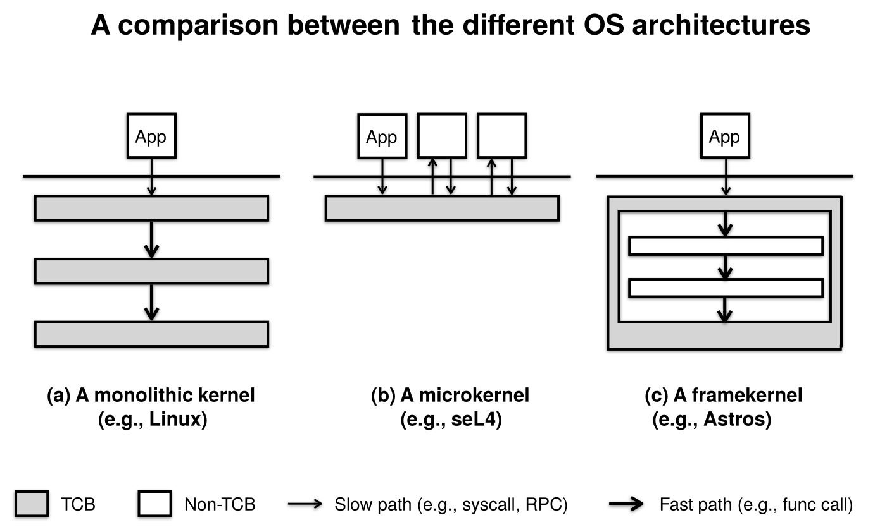

The Framekernel Architecture
Framekernel: What and Why
The security of a microkernel, the speed of a monolithic kernel.
Astros introduces a novel OS architecture called framekernel, which unleashes the full power of Rust to bring the best of both monolithic kernels and microkernels.
Within the framekernel architecture, the entire OS resides in the same address space (like a monolithic kernel) and is required to be written in Rust. However, there's a twist---the kernel is partitioned in two halves: the OS Framework (akin to a microkernel) and the OS Services. Only the OS Framework is allowed to use unsafe Rust, while the OS Services must be written exclusively in safe Rust.
| Unsafe Rust | Responsibilities | Code Sizes | |
|---|---|---|---|
| OS Framework | Allowed | Encapsulate low-level unsafe code within high-level safe APIs | Small |
| OS Services | Not allowed | Implement OS functionalities, e.g., system calls, file systems, device drivers | Large |
As a result, the memory safety of the kernel can be reduced to that of the OS Framework, thus minimizing the Trusted Computing Base (TCB) associated with the kernel's memory safety. On the other hand, the single address space allows different parts of the kernel to communicate in the most efficient means, e.g., function calls and shared memory. Thanks to the framekernel architecture, Astros can offer both exceptional performance and enhanced safety.

Requirements for the OS Framework
While the concept of framekernel is straightforward, the design and implementation of the required OS framework present challenges. It must concurrently fulfill four criteria.

- Soundness. The safe APIs of the framework are considered sound if no undefined behaviors shall be triggered by whatever safe Rust code that a programmer may write using the APIs
- as long as the code is verified by the Rust toolchain. Soundness ensures that the OS framework, in conjunction with the Rust toolchain, bears the full responsibility for the kernel's memory safety.
-
Expressiveness. The framework should empower developers to implement a substantial range of OS functionalities in safe Rust using the APIs. It is especially important that the framework enables writing device drivers in safe Rust, considering that device drivers comprise the bulk of the code in a fully-fleged OS kernel (like Linux).
-
Minimalism. As the TCB for memory safety, the framework should be kept as small as possible. No functionality should be implemented inside the framework if doing it outside is possible.
-
Efficiency. The safe API provided by the framework is only allowed to introduce minimal overheads. Ideally, these APIs should be realized as zero-cost abstractions.
Fortunately, our efforts to design and implement an OS framework meeting these standards have borne fruit in the form of the Astros KSTD. Using this framework as a foundation, we have developed the Astros Kernel; this framework also enables others to create their own framekernels, with different goals and tradeoffs.